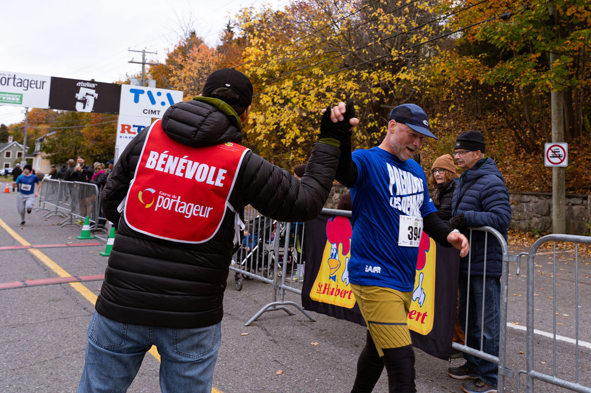

À savoir
Informations importantes.
Aucun remboursement et aucun transfert de dossard avant ou pendant l'évènement.
- 01 Ouverture de la période de remise des dossards à 9h00.
- 02 Fermeture 15 minutes avant le départ de chaque épreuve.
- 03 Pensez à vous apporter des vêtements chauds.
- 04 Vous ne pouvez pas courir avec votre chien sur aucun des parcours.
- 05 Les chiens (même en laisse) sont interdits sur tous nos parcours.
Limite de 750 participants · inscrivez-vous en ligne.
Sur la ligne
